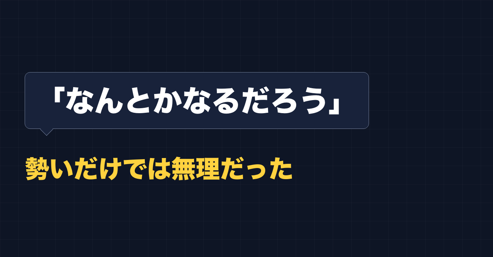
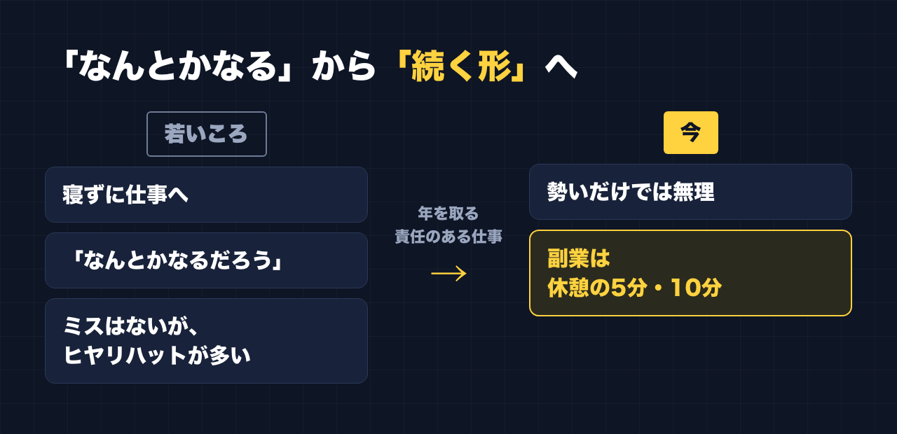

1. タイトルをコピーして、note のタイトル欄に貼る
2. 「本文1をコピー」から順にコピーし、note の本文に貼る
3. 青いラベルの位置に、images フォルダの同じ名前の画像を入れる（本文には貼られません）
※ 見出しが普通の文字になった場合は、その行を選んで「大見出し」を設定してください

「なんとかなるだろう」
若いころの私は、だいたいこれで仕事をしていました。
寝ずにそのまま仕事に行く、なんてこともありました。眠くても、行けばなんとかなる。実際、なんとかなっていました。
若気の至りです。正直に言うと、仕事をなめていました。
ミスはしていない。でも、ヒヤリハットは多かった
幸い、実際に大きなミスをしたことはありません。
ただ、今振り返ると、ヒヤリハットはたくさんありました。
ヒヤリハットは、事故やミスにはならなかったけれど、「ヒヤリとした」「ハッとした」出来事のことです。起きなかっただけで、一歩まちがえば起きていたかもしれないもの。
寝不足で「なんとかなるだろう」とやっていたころの私は、そういう場面をたくさん通り抜けていたんだと思います。当時は、それに気づいてもいませんでした。
仕事で人に教える側に立つとき、私はこの話を失敗談としてよく話します。そして、こうも話しています。
「ヒヤリハットには、周期がある。人によって違うけれど」
変わったきっかけは2つ
「なんとかなるだろう」が変わったきっかけは、2つあります。
ひとつは、年を取ったことです。あのころの自分を思い出して、「バカだったな」と思うようになりました。
もうひとつは、責任のある仕事をするようになったことです。自分ひとりの問題では済まない立場になって、「勢いだけでは無理」という現実を見ました。
勢いで乗り切れていたのは、たまたまだった。そう思えるようになったのは、ここからです。

副業でも、勢いだけの計画は続かなかった
この話は、副業にもつながっています。
副業を始めてしばらく、私は「帰宅したら毎日1〜2時間やる」と決めていました。
でも、続きませんでした。仕事から帰ると疲れていて、できない。できない自分に落ち込んで、「こんなにできないのは自分だけだ」と感じていました。
今は、スキマの5分でやっている
今は、やり方を変えています。
- 昼休みや、休憩の合間の5分、10分でやる
- 時間は決めない
- やれるときにやる
こうしてから、気持ちが楽になり、続いています。
勢いだけでは無理、というのは仕事で学んだことでした。副業でも同じで、気合いを前提にした計画は、少なくとも私には続きませんでした。続くのは、疲れていてもできるくらいの小ささでした。
最後に
若いころの「なんとかなるだろう」は、たまたまなんとかなっていただけでした。
副業も、「なんとかなるだろう」で大きく始めるより、5分でいいから続く形にする。今の私は、そう考えています。
ここからは宣伝です。
公式LINEでは、「特典」と送っていただくと、LINE限定のプロンプト5本をお届けしています。
https://lin.ee/RzyA13P
「副業ドラフト」は、AI の質問に答えるだけで、副業に使える強みの棚卸しと Threads の下書きを作るツールです。Threads の下書き3本までは無料で使えます。
https://note-threadssf.onrender.com
Threads では、こうした試行錯誤を日々発信しています。
https://www.threads.com/@shachiku_mao
最後まで読んでいただき、ありがとうございました。